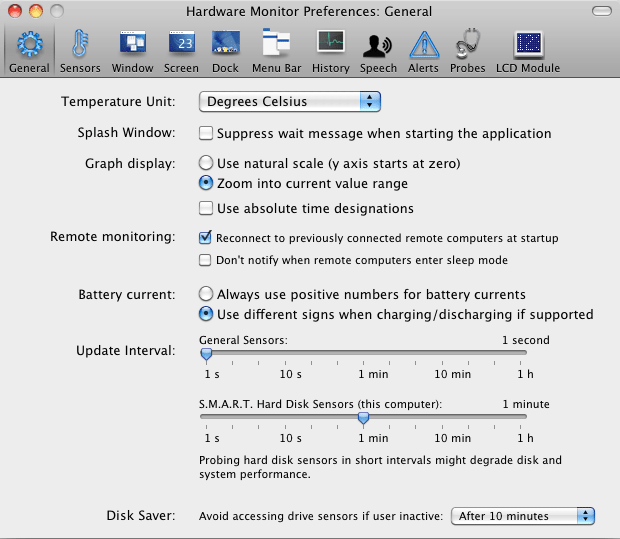

Setting general preferences |
To customize the program to your specific needs, you can set a great variety of defaults and preferences. You can access these settings via the main menu and its item Preferences… or by pressing the key combination ⌘+,. The settings are subdivided into eight areas which will be discussed in detail later. The basic preferences which are independent of the computer model you are using, are displayed in the General pane.
The pop-up menu at Temperature Unit selects which unit the application shall use to display temperature data. You can select between:
Note: A combination of multiple units is not supported in the graphical history display and when exporting history data. In these cases, the first unit of the combination will be used.
When launching the application, it has to analyze the sensor equipment of your computer, which can be a lengthy task depending on the hardware devices you are using and the number of additional remote systems you are monitoring. The program displays a wait message in a small window while the necessary preparations take place. As soon as the window disappears, the application will be fully operational. If you don't like such windows, you can disable it using the check mark at Splash Window: Suppress wait message when starting the application.
The setting Graph display selects how the scales of the vertical axes in history graphs will be computed. The item Use natural scale will display each axis beginning at zero. The selection Zoom into current value range will display the graph in such a way that the value range visible in the selected history interval covers 90 percent of the graph's height. Small details can be detected much better, but the displayed curve may tend to display small changes and measurement errors in an exaggerated fashion.
By default, time values shown on the horizontal axes of the history graphs are labeled using time designations relative to the present time, e.g. "42 minutes ago". You can alternatively display absolute time readings like "8:42:15 am" by setting the option Use absolute time designations.
Three options are available in the area Remote monitoring :
The preference setting Battery current is available for Hardware Monitor only. It is not displayed in Temperature Monitor. The setting controls what policy the application should follow when displaying and recording amperage values for battery units. Some versions of Mac OS X and certain battery units allow that the sign of amperage value reflects whether the battery is currently charging or discharging. So a current of 1.5 amps can be displayed as 1.5 A if the current flows from battery to computer, and as -1.5 A when the same current flows in the opposite direction from computer to battery. Press the button at Always use positive numbers for battery currents, if you want to make sure the values are always greater than 0. Select the option Use different signs when charging/discharging if supported when you like to allow the sign to change. Note that some battery units and some older versions of Mac OS X are unable to support this.
The sliders displayed under Update Interval control how often the application will perform the measurements. It also controls how often the displayed values are updated. You can select between different time intervals ranging from one second to one hour. The recommended update interval is 2 seconds.
Separated from the general update preference is the time interval for requests sent to hard disk sensors. Some hard disk models may temporarily go into diagnostic mode or move their read/write heads when the sensors are read out, so it is no recommended to make the update interval too short. Otherwise, repeated queries to the sensors might reduce performance of your hard disk(s).
Note that access to disk sensors built into the drives themselves will be interpreted as "user activity" by the drives. If you have enabled sleep mode for hard drives in Mac OS X, monitoring these sensors could cause your drives to no longer enter sleep mode as expected. For this reason, the application contains a Disk Saver feature: When you are inactive and the computer is not really in use for some period of time, the program can automatically stop all sensor communication with your hard drive(s). This allows the standard sleep feature of the hard drives to become active. Set the pop-up menu at Disk Saver to the desired time interval.
The Disk Saver feature in the application is intentionally independent of your personal Energy Saver preferences of Mac OS X.

In addition to the general preference settings, the application automatically remembers which output windows you have used for the display of readings. This includes the position of the windows on screen. You don't need to care about those settings. The next time you are starting the application, it will automatically restore the state that was effective the last time you have used the program.
If you are using the monitor program as "roaming user" on different computers in a network, and your private folder is located on a common file server (which is a standard setup in large companies and schools), the software is able to remember machine-specific settings for each computer and computer type you have used.
The settings in General and Sensors become valid for all of your computers, all other preference areas are defined individually per each computer, when you are roaming between them.